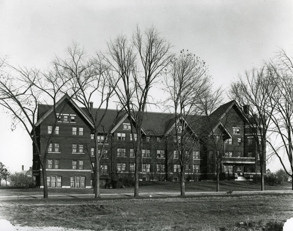
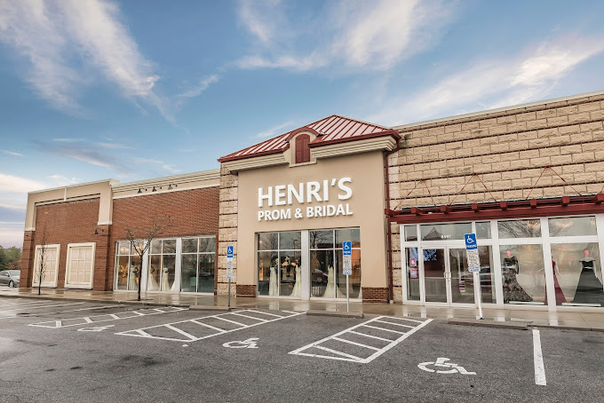
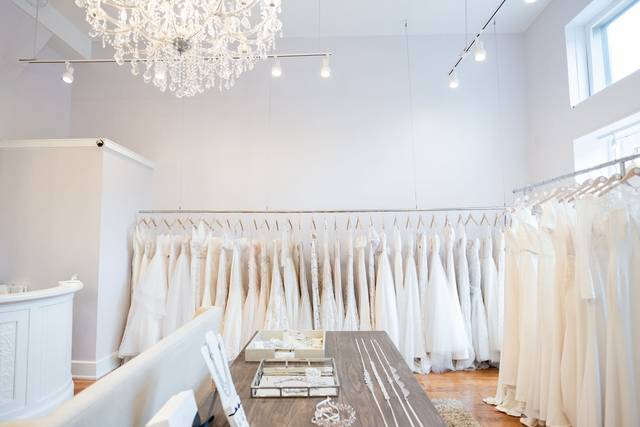

Data Analyst, Linguistics Department at OSU
- At Ohio State University's Linguistics Department, I was responsible for collecting and analyzing audio data from college-aged students in Ohio and Michigan as part of the Northern Vowel Shift project.
- I specialized in the detailed analysis of target vowel sounds, contributing valuable insights to ongoing linguistic research and enhancing our understanding of regional language variations.
Lead Receptionist, Henri's Cloud Nine Prom and Bridal
- As the Lead Receptionist at Henri's Cloud Nine Prom and Bridal, I efficiently managed multi-line phone systems, ensuring that every customer received exceptional service.
- My role involved directing customers to the appropriate bridal or prom stylist based on their individual needs, enhancing their shopping experience.
- I also compiled and presented weekly reports to the General Manager, providing insights on stylist conversion rates and contributing to the store's operational success.
Inventory Specialist, Luxe Redux Bridal
- At Luxe Redux Bridal, I processed data entry and documentation for new gown inventory from over 125 consignors, ensuring accurate records across seven locations.
- I developed and optimized processes for inventory acquisition, maintenance, and disposition, streamlining operations and enhancing efficiency.
- My responsibilities included managing consignor relations and ensuring adherence to payout structures in accordance with current contracts.
- I played a key role in the business's expansion from three brick-and-mortar stores to seven, including the establishment of an off-site inventory management warehouse.